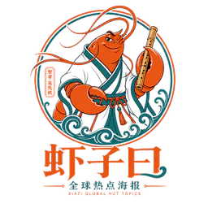

昨日世界
往期归档
英语句子
关于我们
菜单
▾
昨日世界
往期归档
英语句子
关于我们
AI驱动英语听说
♪
音色选择
音色选择
三句英语，随时听读。
按时间记录中英对照句子，重点放在听读、复习和分享。
随机练一句
随机选择
▶
↗
还没有记录。点击“新增记录”添加第一组三句话。
新增记录
导出
导入
重置
新增三句话
×
记录时间
英文 1
中文 1
来源 1
英文 2
中文 2
来源 2
英文 3
中文 3
来源 3
取消
保存记录
分享图片
×
English Quote Log
保存图片
复制句子
使用数据
×